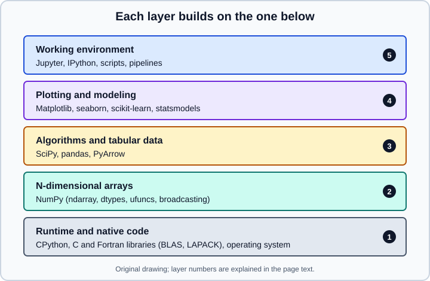

The Scientific Python Stack
|
This content was generated with the assistance of AI and should be verified against the official documentation before being relied on in production. |
This page was checked in October 2026. Examples target Python 3.13 or 3.14. The hands-on pages of this section target NumPy 2.5, pandas 3.1 and scikit-learn 1.9, and every example below was run on Python 3.13.18 with the library versions in the table. Python 3.15 was released in October 2026 and is current, but it is new: confirm that wheels exist for every library you need before moving a project to it. Items that are not released yet are labelled "upcoming" and never presented as current.
There is no single "data science package". The ecosystem is a set of independent, community-maintained projects that agree on a few shared data structures, mainly the NumPy array. Understanding which library owns which job is the fastest way to find the right tool and to read error messages. The community effort that coordinates them, Scientific Python, publishes cross-project agreements called SPECs, including the minimum-version policy described later on this page.
The layers

The numbered markers in the figure correspond to the following list, from the bottom up.
-
Runtime and native code. CPython runs your code. Numerical work is delegated to compiled C, C++ and Fortran libraries, notably BLAS and LAPACK for linear algebra. Binary wheels bundle an optimised BLAS, which is why installing NumPy with pip normally just works, and why the number of threads a computation uses is a property of that library rather than of Python. The environment page covers wheels, BLAS and conda.
-
N-dimensional arrays. NumPy provides the typed, fixed-size, contiguous
ndarray, vectorised operations (ufuncs), broadcasting and the random number generators. Nearly everything above this layer accepts or returns NumPy arrays. -
Algorithms and tabular data. SciPy adds numerical routines: optimisation, interpolation, sparse matrices, signal processing, distributions and statistical tests. pandas adds labelled tables (
SeriesandDataFrame), joins, grouping, time series and input and output for many formats. PyArrow implements the Apache Arrow columnar memory format and Parquet; pandas uses it for some dtypes and for fast file I/O. -
Plotting and modeling. Matplotlib draws figures, and seaborn builds statistical charts on top of it. scikit-learn provides machine learning estimators with one consistent interface, and statsmodels provides statistical models with inference output such as coefficient tables and confidence intervals.
-
Working environment. JupyterLab, Jupyter Notebook 7 (a simpler, document-centric interface built on JupyterLab components; the pre-7 classic interface is now the separate NbClassic package), IPython, and plain scripts are where you write and run code. They are not part of the computation, but they shape how reproducible it is. See Jupyter Notebooks & JupyterLab.
What each library owns
| Library | Owns | Does not own | Version used here |
|---|---|---|---|
The array type, dtypes, broadcasting, ufuncs, basic linear algebra and FFT, random generators |
Labelled data, missing-data semantics for tables, statistical tests |
2.5.4 |
|
Optimisation, sparse arrays, signal processing, special functions, |
Tables and machine learning pipelines |
1.18.1 |
|
Series and DataFrame, indexing, missing values, merge, group by, time series, file I/O |
Out-of-core or distributed computation; model fitting |
3.1.0 |
|
Columnar in-memory format, Parquet and IPC files, interchange with other engines |
Analysis API for everyday work (that is pandas' or Polars' role) |
26.0.0 |
|
Figures, axes, artists, output formats |
Statistical summaries (use seaborn) and browser interactivity (use Plotly or similar) |
3.11.2 |
|
Statistical plots from tidy tables, themes, palettes |
Anything beyond a Matplotlib figure; it sits on top of Matplotlib |
0.13.2 |
|
Estimators, pipelines, preprocessing, model selection, metrics, inspection |
Deep learning, GPU training at scale, rich statistical inference tables |
1.9.1 |
|
Regression and time series models with standard errors, tests and diagnostics |
Large-scale prediction pipelines |
0.15.0 |
|
Browser-based notebooks, terminals and editors, kernels |
Computation (the kernel does that) and version control of notebooks |
4.6.x |
Two rows of the table are frequent sources of confusion. scikit-learn and statsmodels both fit linear and logistic regression, but with different goals: scikit-learn optimises for prediction and offers regularisation, validation and pipelines, while statsmodels reports coefficients with standard errors and p-values. And seaborn is a layer on Matplotlib, not a rival to it, so a seaborn chart can always be customised with Matplotlib calls. The Choosing Tools & Learning Path page gives decision tables for these and other choices.
The Python versions of this period are as follows. Python 3.15.2 is the current release (3.15.0 appeared on 2026-10-09), 3.14 and 3.13 are in maintenance, and 3.10 reaches end of life in October 2026. NumPy 2.5 and SciPy 1.18 need Python 3.12 or later. Always read the "Requires" line of a release on PyPI before assuming a combination works.
Checking what you have
Print versions at the top of a report or notebook so that results can be tied to an environment.
import sys
from importlib.metadata import PackageNotFoundError, version
print(f"Python {sys.version_info.major}.{sys.version_info.minor}.{sys.version_info.micro}")
for dist in ["numpy", "scipy", "pandas", "pyarrow", "matplotlib", "seaborn",
"scikit-learn", "statsmodels", "jupyterlab"]:
try:
print(f"{dist:<14}{version(dist)}")
except PackageNotFoundError:
print(f"{dist:<14}not installed")On the environment used for this section it prints:
Python 3.13.18
numpy 2.5.4
scipy 1.18.1
pandas 3.1.0
pyarrow 26.0.0
matplotlib 3.11.2
seaborn 0.13.2
scikit-learn 1.9.1
statsmodels 0.15.0
jupyterlab not installedUse the distribution name when asking importlib.metadata, which for scikit-learn differs from the import name: the package is installed as scikit-learn and imported as sklearn. Individual libraries also expose __version__, for example numpy.__version__.
Source: Python: importlib.metadata
Installing the core set
The shortest installation of the libraries used in this section, inside a virtual environment, is:
python -m venv .venv
source .venv/bin/activate
python -m pip install --upgrade pip
python -m pip install numpy scipy pandas pyarrow matplotlib seaborn scikit-learn statsmodels jupyterlabThat is enough to follow every page. For anything you want to reproduce later, use a lock file, and prefer uv or conda-forge when a project needs compiled dependencies that pip handles poorly. The Python virtual environments and packaging page, the lock files page and the data science environment page cover each route, and the page on externally managed Pythons explains the "externally-managed-environment" error some Linux distributions raise when you run pip outside a virtual environment. PyArrow is an optional dependency of pandas 3.1: pandas works without it, but installing it enables Arrow-backed strings and fast Parquet I/O, so installing it is recommended.
Source: pandas: Installation and NumPy: Installing
How the libraries exchange data
The stack works because the libraries hand each other the same few structures without conversion cost.
| Boundary | Mechanism |
|---|---|
pandas to NumPy |
|
NumPy to pandas |
|
pandas to Arrow |
|
Arrow to NumPy |
|
scikit-learn |
Accepts array-likes (NumPy arrays, SciPy sparse matrices and pandas objects); column names of a DataFrame are recorded as |
Other array libraries and GPUs |
The DLPack protocol and the Python array API standard let NumPy, PyTorch and others share memory in many cases; the NumPy main namespace follows the array API standard version 2024.12 |
The following script shows the first four boundaries and the default string dtype of pandas 3.
import numpy as np
import pandas as pd
import pyarrow as pa
df = pd.DataFrame({"a": [1.0, 2.0, 3.0], "b": [4.0, 5.0, 6.0]})
# pandas -> NumPy: a 2-D float64 array; with Copy-on-Write it may be a read-only view
arr = df.to_numpy()
print(arr.dtype, arr.shape, "writeable:", arr.flags.writeable)
# NumPy -> pandas
back = pd.DataFrame(arr * 2, columns=df.columns)
print(back.sum().to_dict())
# pandas -> Arrow -> pandas: the columnar interchange layer
table = pa.Table.from_pandas(df)
print(table.schema.names, table.num_rows)
print(table.to_pandas().equals(df))
# NumPy <-> Arrow for a single numeric column (zero-copy when there are no nulls)
col = table.column("a").to_numpy()
print(type(col).__name__, col.dtype)
# String columns use the str dtype by default in pandas 3
s = pd.Series(["x", "y"])
print(s.dtype)Output on pandas 3.1.0, NumPy 2.5.4 and PyArrow 26.0.0:
float64 (3, 2) writeable: False
{'a': 12.0, 'b': 30.0}
['a', 'b'] 3
True
ndarray float64
strThe writeable: False line is a real pitfall. Code that calls df.to_numpy() and then edits the array in place raises an error under pandas 3. Make an explicit copy (df.to_numpy(copy=True)) when you need to modify the data.
One example across the layers
A small regression touches most of the stack. NumPy generates the data with a seeded generator, pandas holds it, SciPy and scikit-learn fit the same line, and Matplotlib draws it using the explicit fig, ax interface.
import numpy as np
import pandas as pd
import scipy.stats as st
import matplotlib
matplotlib.use("Agg")
import matplotlib.pyplot as plt
from sklearn.linear_model import LinearRegression
rng = np.random.default_rng(42)
x = rng.uniform(0, 10, size=200)
y = 3.0 * x + 2.0 + rng.normal(0, 2.0, size=200)
df = pd.DataFrame({"x": x, "y": y})
print(type(df["x"].to_numpy()))
print(df.describe().loc[["mean", "std"]].round(2))
res = st.linregress(df["x"], df["y"])
print(f"scipy.stats: slope={res.slope:.2f}, intercept={res.intercept:.2f}, r={res.rvalue:.3f}")
model = LinearRegression().fit(df[["x"]], df["y"])
print(f"scikit-learn: slope={model.coef_[0]:.2f}, intercept={model.intercept_:.2f}")
fig, ax = plt.subplots(figsize=(5, 3))
ax.scatter(df["x"], df["y"], s=8)
grid = np.linspace(0, 10, 50)
ax.plot(grid, model.predict(pd.DataFrame({"x": grid})), color="tab:red")
ax.set(xlabel="x", ylabel="y")
fig.savefig("fit.png", dpi=100)
print("saved fit.png")<class 'numpy.ndarray'>
x y
mean 4.94 16.85
std 2.82 9.07
scipy.stats: slope=3.13, intercept=1.38, r=0.975
scikit-learn: slope=3.13, intercept=1.38
saved fit.pngBoth libraries recover the same line, as they should, because ordinary least squares has one solution. The point of the example is the data flow: one seeded generator from NumPy, a DataFrame as the container, two libraries consuming it and a Matplotlib figure at the end. Two habits shown here carry through the section. Use np.random.default_rng(seed) rather than the legacy global np.random.seed, and create figures with fig, ax = plt.subplots() rather than relying on the implicit current figure of pyplot. A 3-D axes is created with fig.add_subplot(projection="3d"): the older figure.gca(projection="3d") was removed in Matplotlib 3.6.
Which versions to support: SPEC 0
Libraries and projects that depend on them need a shared rule for how old a version can be. SPEC 0 ("Minimum Supported Dependencies") is the rule most core projects follow. It says to drop support for a Python version three years after its release, and for a core package version two years after its release. A project may drop support earlier if a critical fix requires it. The minimum supported version is the one after the last version dropped.
From the published schedule, the drops that matter around the date of this page are these.
| Drop date | Package | Version dropped | Released |
|---|---|---|---|
2026-06-16 |
NumPy |
2.0.0 |
June 2024 |
2026-08-18 |
NumPy |
2.1.0 |
August 2024 |
2026-10-01 |
Python |
3.12 |
October 2023 |
2026-12-08 |
NumPy |
2.2.0 |
December 2024 |
2026-12-09 |
scikit-learn |
1.6.0 |
December 2024 |
2026-12-14 |
Matplotlib |
3.10.0 |
December 2024 |
2027-01-03 |
SciPy |
1.15.0 |
January 2025 |
2027-06-05 |
pandas |
2.3.0 |
June 2025 |
2027-06-05 |
scikit-learn |
1.7.0 |
June 2025 |
2027-06-07 |
NumPy |
2.3.0 |
June 2025 |
2027-10-07 |
Python |
3.13 |
October 2024 |
Once the December 2026 drops have happened, the minimum versions under SPEC 0 are Python 3.13, NumPy 2.3, Matplotlib 3.11 and scikit-learn 1.7. SciPy stays at 1.15 until January 2027, and pandas stays at 2.3 until June 2027. These are minimums for library authors who want to follow the policy, not the versions to start a new application on: a new application should use the newest releases that all of its dependencies support, which here means NumPy 2.5, pandas 3.1 and scikit-learn 1.9.
You can check an environment against the policy with a few lines of code. The minimums below are the ones in effect from the end of 2026.
from importlib.metadata import version
from packaging.version import Version
# Minimum versions on 2026-12-31 according to SPEC 0 (2026 Q4 drops applied)
MINIMUMS = {"numpy": "2.3", "scikit-learn": "1.7", "matplotlib": "3.11",
"scipy": "1.15", "pandas": "2.3"}
for dist, floor in MINIMUMS.items():
installed = Version(version(dist))
status = "ok" if installed >= Version(floor) else "below SPEC 0 minimum"
print(f"{dist:<13} installed {installed!s:<7} minimum {floor:<5} {status}")numpy installed 2.5.4 minimum 2.3 ok
scikit-learn installed 1.9.1 minimum 1.7 ok
matplotlib installed 3.11.2 minimum 3.11 ok
scipy installed 1.18.1 minimum 1.15 ok
pandas installed 3.1.0 minimum 2.3 okThe script uses the packaging library, which pip vendors but which is also installable on its own (python -m pip install packaging).
What changed in the stack
Most breakage when upgrading old code comes from a handful of releases. The details live on the migration page of each sub-section; this table lists the changes that affect more than one library.
| Release | Change | Typical old code that breaks |
|---|---|---|
NumPy 2.0 (June 2024) |
Many aliases removed, scalar representation changed, new type promotion rules (NEP 50), |
|
pandas 2.0 (April 2023) |
|
Growing a DataFrame in a loop with |
pandas 3.0 |
Copy-on-Write is the only mode, strings default to the |
Chained assignment such as |
pandas 3.1 |
|
|
scikit-learn 0.18 to 1.2 |
|
Tutorials from before 2020 |
Matplotlib 3.6 |
|
Use |
There is also an ecosystem-wide lesson in the release notes. The official NumPy site contains a few pages that lag its release notes. When a reference page and the release notes of the same version disagree, follow the release notes and the actual behaviour of the installed version, which you can test in a few lines.
Common pitfalls
-
Mixing installers. Installing some packages with pip and others with conda in one environment can replace shared binary libraries and break imports. Pick one primary tool per environment, and with conda use the conda-forge channel throughout.
-
Thread oversubscription. NumPy, SciPy and scikit-learn may each start a pool of threads through BLAS or OpenMP. Running many worker processes that each use all cores slows a machine down. The
threadpoolctlpackage inspects and limits those pools. -
Importing under the wrong name.
pip install scikit-learnprovidesimport sklearn. Other packages whose install name differs from their import name includepillow(imported asPIL). -
Trusting an implicit figure.
plt.plotdraws on whichever figure is current, which makes code in notebooks depend on the order of cells. Hold afigand anaxinstead. -
Treating Python 3.15 as automatic. A new Python release is supported by libraries one by one, so check each dependency before upgrading a production environment.
-
Untracked environments. A result that cannot be tied to package versions cannot be reproduced. Pin versions with a lock file, as described on Reproducibility & MLOps Basics.
Beyond the core stack
The core stack is not the only choice. Polars, DuckDB and the Arrow ecosystem provide alternatives to pandas for large tables, XGBoost and LightGBM provide specialised gradient boosting, and PyTorch and Keras are the usual next step for deep learning, covered in the LLM foundations section. The Beyond the Core page positions each one. For new Python programmers, the Python guide and its ecosystem and learning resources page are good starting points, and R users can compare with the R data frames page.